flowchart LR A[Customer ID] --> B[Find First Invoice Date] B --> C[Assign Cohort Month] C --> D[Calculate Months Since First Purchase] D --> E[Measure Retention or Sales] E --> F[Build Cohort Heatmap]
Session 03: Advanced Analytics
ADVANCED CALCULATIONS
DATE FUNCTIONS
COHORT ANALYSIS
SPATIAL ANALYTICS
DATA MODELING
TABLEAU PREP
Learning Goals
- Use advanced Tableau functions for analytical modeling
- Build complex calculated fields
- Apply table calculations (running totals, percent of total, ranking, differences, moving averages)
- Work with advanced date logic and date parameters
- Build cohort and retention analysis views
- Perform spatial analysis and spatial joins
- Connect and visualize geographic data
- Apply Tableau data modeling concepts from
Session 2in more complex use cases
- Build advanced KPI dashboards and analytical heatmaps
In previous sessions, we focused on building visualizations, working with filters and parameters, and creating calculated fields. We also introduced key concepts such as relationships, joins, and Level of Detail (LOD) expressions, which form the foundation of analytical work in Tableau.
In this session, we move from building charts to building analytical logic inside Tableau.
Instead of focusing only on how data is displayed, we focus on how calculations are performed, how different components interact, and how to ensure that results remain accurate across different analytical scenarios.
This shift allows us to move from simple dashboards to more advanced analytical systems, where calculations, date logic, and data modeling work together to answer more complex business questions.
Advanced Table Calculations
In real analytical scenarios, calculations rarely rely on a single function. Instead, they combine multiple layers of logic including:
- aggregation
- table calculations
- conditional expressions
- sometimes date logic
\(\rightarrow\) complex calculations
Complex calculations are used when simple aggregations such as SUM or AVG are not sufficient to answer analytical questions. They allow analysts to model behavior such as growth rates, comparisons across time, cumulative metrics, and conditional ranking.
A key characteristic of complex calculations is that they often combine multiple computation stages, where:
- Some parts are calculated at the row or aggregate level
- Other parts are computed as table calculations after aggregation
Understanding this layered computation is essential for building correct analytical models.
Percentage Contribution Over Time
One of the most common patterns in complex calculations is combining aggregation with table calculations.
For example, calculating the percentage contribution of each category over time:
Input
| City | 2023 | 2024 | 2025 |
|---|---|---|---|
| Atlanta | 94,525 | 101,223 | 39,734 |
| Boston | 64,750 | 72,224 | 35,047 |
| Chicago | 71,936 | 63,697 | 35,247 |
| Dallas | 57,267 | 54,628 | 30,285 |
| Denver | 76,488 | 73,585 | 29,613 |
| Los Angeles | 64,674 | 106,570 | 11,326 |
| Miami | 47,172 | 62,693 | 37,028 |
| New York | 75,898 | 87,916 | 29,039 |
| San Francisco | 50,098 | 68,662 | 29,742 |
| Seattle | 73,588 | 78,309 | 26,954 |
Function
RUNNING_SUM(SUM([Order Total])) / WINDOW_SUM(SUM([Order Total]))This calculation combines:
- Aggregation:
SUM([Order Total])
- Running accumulation:
RUNNING_SUM
- Total window comparison:
WINDOW_SUM
This type of calculation is often used to understand cumulative contribution.
Execution
| City | Year | Revenue | Running Sum | Window Sum | Calculation | Result |
|---|---|---|---|---|---|---|
| Atlanta | 2023 | 94,525 | 94,525 | 235,482 | 94,525 / 235,482 | 40.14% |
| Atlanta | 2024 | 101,223 | 195,748 | 235,482 | 195,748 / 235,482 | 83.13% |
| Atlanta | 2025 | 39,734 | 235,482 | 235,482 | 235,482 / 235,482 | 100.00% |
| Boston | 2023 | 64,750 | 64,750 | 172,021 | 64,750 / 172,021 | 37.64% |
| Boston | 2024 | 72,224 | 136,974 | 172,021 | 136,974 / 172,021 | 79.63% |
| Boston | 2025 | 35,047 | 172,021 | 172,021 | 172,021 / 172,021 | 100.00% |
| Chicago | 2023 | 71,936 | 71,936 | 170,880 | 71,936 / 170,880 | 42.10% |
| Chicago | 2024 | 63,697 | 135,633 | 170,880 | 135,633 / 170,880 | 79.37% |
| Chicago | 2025 | 35,247 | 170,880 | 170,880 | 170,880 / 170,880 | 100.00% |
| Dallas | 2023 | 57,267 | 57,267 | 142,180 | 57,267 / 142,180 | 40.28% |
| Dallas | 2024 | 54,628 | 111,895 | 142,180 | 111,895 / 142,180 | 78.70% |
| Dallas | 2025 | 30,285 | 142,180 | 142,180 | 142,180 / 142,180 | 100.00% |
| Denver | 2023 | 76,488 | 76,488 | 179,686 | 76,488 / 179,686 | 42.57% |
| Denver | 2024 | 73,585 | 150,073 | 179,686 | 150,073 / 179,686 | 83.52% |
| Denver | 2025 | 29,613 | 179,686 | 179,686 | 179,686 / 179,686 | 100.00% |
| Los Angeles | 2023 | 64,674 | 64,674 | 182,570 | 64,674 / 182,570 | 35.42% |
| Los Angeles | 2024 | 106,570 | 171,244 | 182,570 | 171,244 / 182,570 | 93.80% |
| Los Angeles | 2025 | 11,326 | 182,570 | 182,570 | 182,570 / 182,570 | 100.00% |
| Miami | 2023 | 47,172 | 47,172 | 146,893 | 47,172 / 146,893 | 32.11% |
| Miami | 2024 | 62,693 | 109,865 | 146,893 | 109,865 / 146,893 | 74.79% |
| Miami | 2025 | 37,028 | 146,893 | 146,893 | 146,893 / 146,893 | 100.00% |
| New York | 2023 | 75,898 | 75,898 | 192,853 | 75,898 / 192,853 | 39.36% |
| New York | 2024 | 87,916 | 163,814 | 192,853 | 163,814 / 192,853 | 84.94% |
| New York | 2025 | 29,039 | 192,853 | 192,853 | 192,853 / 192,853 | 100.00% |
| San Francisco | 2023 | 50,098 | 50,098 | 148,502 | 50,098 / 148,502 | 33.74% |
| San Francisco | 2024 | 68,662 | 118,760 | 148,502 | 118,760 / 148,502 | 79.97% |
| San Francisco | 2025 | 29,742 | 148,502 | 148,502 | 148,502 / 148,502 | 100.00% |
| Seattle | 2023 | 73,588 | 73,588 | 178,851 | 73,588 / 178,851 | 41.14% |
| Seattle | 2024 | 78,309 | 151,897 | 178,851 | 151,897 / 178,851 | 84.93% |
| Seattle | 2025 | 26,954 | 178,851 | 178,851 | 178,851 / 178,851 | 100.00% |
Output
| City | 2023 | 2024 | 2025 |
|---|---|---|---|
| Atlanta | 40.14% | 83.13% | 100.00% |
| Boston | 37.64% | 79.63% | 100.00% |
| Chicago | 42.10% | 79.37% | 100.00% |
| Dallas | 40.28% | 78.70% | 100.00% |
| Denver | 42.57% | 83.52% | 100.00% |
| Los Angeles | 35.42% | 93.80% | 100.00% |
| Miami | 32.11% | 74.79% | 100.00% |
| New York | 39.36% | 84.94% | 100.00% |
| San Francisco | 33.74% | 79.97% | 100.00% |
| Seattle | 41.14% | 84.93% | 100.00% |
Percent Difference Between Consecutive Running Totals
Tableau allows nesting of table calculations, where one table calculation is used inside another.
Strictly speaking, the calculation below returns the absolute difference between consecutive running totals, not the percent difference.
Input
| City | 2023 | 2024 | 2025 |
|---|---|---|---|
| Atlanta | 94,525 | 101,223 | 39,734 |
| Boston | 64,750 | 72,224 | 35,047 |
| Chicago | 71,936 | 63,697 | 35,247 |
| Dallas | 57,267 | 54,628 | 30,285 |
| Denver | 76,488 | 73,585 | 29,613 |
| Los Angeles | 64,674 | 106,570 | 11,326 |
| Miami | 47,172 | 62,693 | 37,028 |
| New York | 75,898 | 87,916 | 29,039 |
| San Francisco | 50,098 | 68,662 | 29,742 |
| Seattle | 73,588 | 78,309 | 26,954 |
Function
RUNNING_SUM(SUM([Order Total])) - LOOKUP(RUNNING_SUM(SUM([Order Total])), -1)This calculation combines:
- Aggregation:
SUM([Order Total])
- Running accumulation:
RUNNING_SUM
- Previous value lookup:
LOOKUP(..., -1)
This calculation compares the current running total with the previous running total.
Execution
| City | Year | Revenue | Running Sum | Previous Running Sum | Calculation | Result |
|---|---|---|---|---|---|---|
| Atlanta | 2023 | 94,525 | 94,525 | NULL | 94,525 - NULL | NULL |
| Atlanta | 2024 | 101,223 | 195,748 | 94,525 | 195,748 - 94,525 | 101,223 |
| Atlanta | 2025 | 39,734 | 235,482 | 195,748 | 235,482 - 195,748 | 39,734 |
| Boston | 2023 | 64,750 | 64,750 | NULL | 64,750 - NULL | NULL |
| Boston | 2024 | 72,224 | 136,974 | 64,750 | 136,974 - 64,750 | 72,224 |
| Boston | 2025 | 35,047 | 172,021 | 136,974 | 172,021 - 136,974 | 35,047 |
| Chicago | 2023 | 71,936 | 71,936 | NULL | 71,936 - NULL | NULL |
| Chicago | 2024 | 63,697 | 135,633 | 71,936 | 135,633 - 71,936 | 63,697 |
| Chicago | 2025 | 35,247 | 170,880 | 135,633 | 170,880 - 135,633 | 35,247 |
| Dallas | 2023 | 57,267 | 57,267 | NULL | 57,267 - NULL | NULL |
| Dallas | 2024 | 54,628 | 111,895 | 57,267 | 111,895 - 57,267 | 54,628 |
| Dallas | 2025 | 30,285 | 142,180 | 111,895 | 142,180 - 111,895 | 30,285 |
| Denver | 2023 | 76,488 | 76,488 | NULL | 76,488 - NULL | NULL |
| Denver | 2024 | 73,585 | 150,073 | 76,488 | 150,073 - 76,488 | 73,585 |
| Denver | 2025 | 29,613 | 179,686 | 150,073 | 179,686 - 150,073 | 29,613 |
| Los Angeles | 2023 | 64,674 | 64,674 | NULL | 64,674 - NULL | NULL |
| Los Angeles | 2024 | 106,570 | 171,244 | 64,674 | 171,244 - 64,674 | 106,570 |
| Los Angeles | 2025 | 11,326 | 182,570 | 171,244 | 182,570 - 171,244 | 11,326 |
| Miami | 2023 | 47,172 | 47,172 | NULL | 47,172 - NULL | NULL |
| Miami | 2024 | 62,693 | 109,865 | 47,172 | 109,865 - 47,172 | 62,693 |
| Miami | 2025 | 37,028 | 146,893 | 109,865 | 146,893 - 109,865 | 37,028 |
| New York | 2023 | 75,898 | 75,898 | NULL | 75,898 - NULL | NULL |
| New York | 2024 | 87,916 | 163,814 | 75,898 | 163,814 - 75,898 | 87,916 |
| New York | 2025 | 29,039 | 192,853 | 163,814 | 192,853 - 163,814 | 29,039 |
| San Francisco | 2023 | 50,098 | 50,098 | NULL | 50,098 - NULL | NULL |
| San Francisco | 2024 | 68,662 | 118,760 | 50,098 | 118,760 - 50,098 | 68,662 |
| San Francisco | 2025 | 29,742 | 148,502 | 118,760 | 148,502 - 118,760 | 29,742 |
| Seattle | 2023 | 73,588 | 73,588 | NULL | 73,588 - NULL | NULL |
| Seattle | 2024 | 78,309 | 151,897 | 73,588 | 151,897 - 73,588 | 78,309 |
| Seattle | 2025 | 26,954 | 178,851 | 151,897 | 178,851 - 151,897 | 26,954 |
Output
| City | 2023 | 2024 | 2025 |
|---|---|---|---|
| Atlanta | NULL | 101,223 | 39,734 |
| Boston | NULL | 72,224 | 35,047 |
| Chicago | NULL | 63,697 | 35,247 |
| Dallas | NULL | 54,628 | 30,285 |
| Denver | NULL | 73,585 | 29,613 |
| Los Angeles | NULL | 106,570 | 11,326 |
| Miami | NULL | 62,693 | 37,028 |
| New York | NULL | 87,916 | 29,039 |
| San Francisco | NULL | 68,662 | 29,742 |
| Seattle | NULL | 78,309 | 26,954 |
Conditional Table Calculations
Complex calculations often include conditional logic to control behavior dynamically.
For example, showing only positive growth:
Input
| City | 2023 | 2024 | 2025 |
|---|---|---|---|
| Atlanta | 94,525 | 101,223 | 39,734 |
| Boston | 64,750 | 72,224 | 35,047 |
| Chicago | 71,936 | 63,697 | 35,247 |
| Dallas | 57,267 | 54,628 | 30,285 |
| Denver | 76,488 | 73,585 | 29,613 |
| Los Angeles | 64,674 | 106,570 | 11,326 |
| Miami | 47,172 | 62,693 | 37,028 |
| New York | 75,898 | 87,916 | 29,039 |
| San Francisco | 50,098 | 68,662 | 29,742 |
| Seattle | 73,588 | 78,309 | 26,954 |
Function
IF SUM([Order Total]) - LOOKUP(SUM([Order Total]), -1) > 0 THEN
SUM([Order Total]) - LOOKUP(SUM([Order Total]), -1)
ENDThis calculation combines:
- Aggregation:
SUM([Order Total])
- Previous value lookup:
LOOKUP(..., -1)
- Conditional logic:
IF ... THEN ... END
This type of logic allows analysts to highlight specific patterns such as growth periods.
Execution
| City | Year | Revenue | Previous Revenue | Calculation | Difference | Positive? | Result |
|---|---|---|---|---|---|---|---|
| Atlanta | 2023 | 94,525 | NULL | 94,525 - NULL | NULL | NULL | NULL |
| Atlanta | 2024 | 101,223 | 94,525 | 101,223 - 94,525 | 6,698 | Yes | 6,698 |
| Atlanta | 2025 | 39,734 | 101,223 | 39,734 - 101,223 | -61,489 | No | NULL |
| Boston | 2023 | 64,750 | NULL | 64,750 - NULL | NULL | NULL | NULL |
| Boston | 2024 | 72,224 | 64,750 | 72,224 - 64,750 | 7,474 | Yes | 7,474 |
| Boston | 2025 | 35,047 | 72,224 | 35,047 - 72,224 | -37,177 | No | NULL |
| Chicago | 2023 | 71,936 | NULL | 71,936 - NULL | NULL | NULL | NULL |
| Chicago | 2024 | 63,697 | 71,936 | 63,697 - 71,936 | -8,239 | No | NULL |
| Chicago | 2025 | 35,247 | 63,697 | 35,247 - 63,697 | -28,450 | No | NULL |
| Dallas | 2023 | 57,267 | NULL | 57,267 - NULL | NULL | NULL | NULL |
| Dallas | 2024 | 54,628 | 57,267 | 54,628 - 57,267 | -2,639 | No | NULL |
| Dallas | 2025 | 30,285 | 54,628 | 30,285 - 54,628 | -24,343 | No | NULL |
| Denver | 2023 | 76,488 | NULL | 76,488 - NULL | NULL | NULL | NULL |
| Denver | 2024 | 73,585 | 76,488 | 73,585 - 76,488 | -2,903 | No | NULL |
| Denver | 2025 | 29,613 | 73,585 | 29,613 - 73,585 | -43,972 | No | NULL |
| Los Angeles | 2023 | 64,674 | NULL | 64,674 - NULL | NULL | NULL | NULL |
| Los Angeles | 2024 | 106,570 | 64,674 | 106,570 - 64,674 | 41,896 | Yes | 41,896 |
| Los Angeles | 2025 | 11,326 | 106,570 | 11,326 - 106,570 | -95,244 | No | NULL |
| Miami | 2023 | 47,172 | NULL | 47,172 - NULL | NULL | NULL | NULL |
| Miami | 2024 | 62,693 | 47,172 | 62,693 - 47,172 | 15,521 | Yes | 15,521 |
| Miami | 2025 | 37,028 | 62,693 | 37,028 - 62,693 | -25,665 | No | NULL |
| New York | 2023 | 75,898 | NULL | 75,898 - NULL | NULL | NULL | NULL |
| New York | 2024 | 87,916 | 75,898 | 87,916 - 75,898 | 12,018 | Yes | 12,018 |
| New York | 2025 | 29,039 | 87,916 | 29,039 - 87,916 | -58,877 | No | NULL |
| San Francisco | 2023 | 50,098 | NULL | 50,098 - NULL | NULL | NULL | NULL |
| San Francisco | 2024 | 68,662 | 50,098 | 68,662 - 50,098 | 18,564 | Yes | 18,564 |
| San Francisco | 2025 | 29,742 | 68,662 | 29,742 - 68,662 | -38,920 | No | NULL |
| Seattle | 2023 | 73,588 | NULL | 73,588 - NULL | NULL | NULL | NULL |
| Seattle | 2024 | 78,309 | 73,588 | 78,309 - 73,588 | 4,721 | Yes | 4,721 |
| Seattle | 2025 | 26,954 | 78,309 | 26,954 - 78,309 | -51,355 | No | NULL |
Output
| City | 2023 | 2024 | 2025 |
|---|---|---|---|
| Atlanta | NULL | 6,698 | NULL |
| Boston | NULL | 7,474 | NULL |
| Chicago | NULL | NULL | NULL |
| Dallas | NULL | NULL | NULL |
| Denver | NULL | NULL | NULL |
| Los Angeles | NULL | 41,896 | NULL |
| Miami | NULL | 15,521 | NULL |
| New York | NULL | 12,018 | NULL |
| San Francisco | NULL | 18,564 | NULL |
| Seattle | NULL | 4,721 | NULL |
Moving Average
Window functions perform calculations across a defined range of data within a partition.
The moving average below calculates the average over the last 4 periods. In this example, there are only three years, so Tableau uses the available years in the partition.
Input
| City | 2023 | 2024 | 2025 |
|---|---|---|---|
| Atlanta | 94,525 | 101,223 | 39,734 |
| Boston | 64,750 | 72,224 | 35,047 |
| Chicago | 71,936 | 63,697 | 35,247 |
| Dallas | 57,267 | 54,628 | 30,285 |
| Denver | 76,488 | 73,585 | 29,613 |
| Los Angeles | 64,674 | 106,570 | 11,326 |
| Miami | 47,172 | 62,693 | 37,028 |
| New York | 75,898 | 87,916 | 29,039 |
| San Francisco | 50,098 | 68,662 | 29,742 |
| Seattle | 73,588 | 78,309 | 26,954 |
Function
WINDOW_AVG(SUM([Order Total]), -3, 0)This calculation combines:
- Aggregation:
SUM([Order Total])
- Window calculation:
WINDOW_AVG
- Relative window range: from
-3to0
This calculation is often used to smooth short-term fluctuations and reveal broader trends.
Execution
| City | Year | Revenue | Window Values | Calculation | Result |
|---|---|---|---|---|---|
| Atlanta | 2023 | 94,525 | 94,525 | (94,525) / 1 | 94,525.00 |
| Atlanta | 2024 | 101,223 | 94,525, 101,223 | (94,525 + 101,223) / 2 | 97,874.00 |
| Atlanta | 2025 | 39,734 | 94,525, 101,223, 39,734 | (94,525 + 101,223 + 39,734) / 3 | 78,494.00 |
| Boston | 2023 | 64,750 | 64,750 | (64,750) / 1 | 64,750.00 |
| Boston | 2024 | 72,224 | 64,750, 72,224 | (64,750 + 72,224) / 2 | 68,487.00 |
| Boston | 2025 | 35,047 | 64,750, 72,224, 35,047 | (64,750 + 72,224 + 35,047) / 3 | 57,340.33 |
| Chicago | 2023 | 71,936 | 71,936 | (71,936) / 1 | 71,936.00 |
| Chicago | 2024 | 63,697 | 71,936, 63,697 | (71,936 + 63,697) / 2 | 67,816.50 |
| Chicago | 2025 | 35,247 | 71,936, 63,697, 35,247 | (71,936 + 63,697 + 35,247) / 3 | 56,960.00 |
| Dallas | 2023 | 57,267 | 57,267 | (57,267) / 1 | 57,267.00 |
| Dallas | 2024 | 54,628 | 57,267, 54,628 | (57,267 + 54,628) / 2 | 55,947.50 |
| Dallas | 2025 | 30,285 | 57,267, 54,628, 30,285 | (57,267 + 54,628 + 30,285) / 3 | 47,393.33 |
| Denver | 2023 | 76,488 | 76,488 | (76,488) / 1 | 76,488.00 |
| Denver | 2024 | 73,585 | 76,488, 73,585 | (76,488 + 73,585) / 2 | 75,036.50 |
| Denver | 2025 | 29,613 | 76,488, 73,585, 29,613 | (76,488 + 73,585 + 29,613) / 3 | 59,895.33 |
| Los Angeles | 2023 | 64,674 | 64,674 | (64,674) / 1 | 64,674.00 |
| Los Angeles | 2024 | 106,570 | 64,674, 106,570 | (64,674 + 106,570) / 2 | 85,622.00 |
| Los Angeles | 2025 | 11,326 | 64,674, 106,570, 11,326 | (64,674 + 106,570 + 11,326) / 3 | 60,856.67 |
| Miami | 2023 | 47,172 | 47,172 | (47,172) / 1 | 47,172.00 |
| Miami | 2024 | 62,693 | 47,172, 62,693 | (47,172 + 62,693) / 2 | 54,932.50 |
| Miami | 2025 | 37,028 | 47,172, 62,693, 37,028 | (47,172 + 62,693 + 37,028) / 3 | 48,964.33 |
| New York | 2023 | 75,898 | 75,898 | (75,898) / 1 | 75,898.00 |
| New York | 2024 | 87,916 | 75,898, 87,916 | (75,898 + 87,916) / 2 | 81,907.00 |
| New York | 2025 | 29,039 | 75,898, 87,916, 29,039 | (75,898 + 87,916 + 29,039) / 3 | 64,284.33 |
| San Francisco | 2023 | 50,098 | 50,098 | (50,098) / 1 | 50,098.00 |
| San Francisco | 2024 | 68,662 | 50,098, 68,662 | (50,098 + 68,662) / 2 | 59,380.00 |
| San Francisco | 2025 | 29,742 | 50,098, 68,662, 29,742 | (50,098 + 68,662 + 29,742) / 3 | 49,500.67 |
| Seattle | 2023 | 73,588 | 73,588 | (73,588) / 1 | 73,588.00 |
| Seattle | 2024 | 78,309 | 73,588, 78,309 | (73,588 + 78,309) / 2 | 75,948.50 |
| Seattle | 2025 | 26,954 | 73,588, 78,309, 26,954 | (73,588 + 78,309 + 26,954) / 3 | 59,617.00 |
Output
| City | 2023 | 2024 | 2025 |
|---|---|---|---|
| Atlanta | 94,525.00 | 97,874.00 | 78,494.00 |
| Boston | 64,750.00 | 68,487.00 | 57,340.33 |
| Chicago | 71,936.00 | 67,816.50 | 56,960.00 |
| Dallas | 57,267.00 | 55,947.50 | 47,393.33 |
| Denver | 76,488.00 | 75,036.50 | 59,895.33 |
| Los Angeles | 64,674.00 | 85,622.00 | 60,856.67 |
| Miami | 47,172.00 | 54,932.50 | 48,964.33 |
| New York | 75,898.00 | 81,907.00 | 64,284.33 |
| San Francisco | 50,098.00 | 59,380.00 | 49,500.67 |
| Seattle | 73,588.00 | 75,948.50 | 59,617.00 |
Window Sum
Window sum calculates the total value within the partition.
In this example, the partition is each city, and the calculation is computed across years.
Input
| City | 2023 | 2024 | 2025 |
|---|---|---|---|
| Atlanta | 94,525 | 101,223 | 39,734 |
| Boston | 64,750 | 72,224 | 35,047 |
| Chicago | 71,936 | 63,697 | 35,247 |
| Dallas | 57,267 | 54,628 | 30,285 |
| Denver | 76,488 | 73,585 | 29,613 |
| Los Angeles | 64,674 | 106,570 | 11,326 |
| Miami | 47,172 | 62,693 | 37,028 |
| New York | 75,898 | 87,916 | 29,039 |
| San Francisco | 50,098 | 68,662 | 29,742 |
| Seattle | 73,588 | 78,309 | 26,954 |
Function
WINDOW_SUM(SUM([Order Total]))This calculation combines:
- Aggregation:
SUM([Order Total])
- Window-level total:
WINDOW_SUM
- Partition-based calculation across years
The result is the same for each year because Tableau calculates the total across the full city-level window.
Execution
| City | Year | Revenue | Window Values | Calculation | Result |
|---|---|---|---|---|---|
| Atlanta | 2023 | 94,525 | 94,525, 101,223, 39,734 | 94,525 + 101,223 + 39,734 | 235,482 |
| Atlanta | 2024 | 101,223 | 94,525, 101,223, 39,734 | 94,525 + 101,223 + 39,734 | 235,482 |
| Atlanta | 2025 | 39,734 | 94,525, 101,223, 39,734 | 94,525 + 101,223 + 39,734 | 235,482 |
| Boston | 2023 | 64,750 | 64,750, 72,224, 35,047 | 64,750 + 72,224 + 35,047 | 172,021 |
| Boston | 2024 | 72,224 | 64,750, 72,224, 35,047 | 64,750 + 72,224 + 35,047 | 172,021 |
| Boston | 2025 | 35,047 | 64,750, 72,224, 35,047 | 64,750 + 72,224 + 35,047 | 172,021 |
| Chicago | 2023 | 71,936 | 71,936, 63,697, 35,247 | 71,936 + 63,697 + 35,247 | 170,880 |
| Chicago | 2024 | 63,697 | 71,936, 63,697, 35,247 | 71,936 + 63,697 + 35,247 | 170,880 |
| Chicago | 2025 | 35,247 | 71,936, 63,697, 35,247 | 71,936 + 63,697 + 35,247 | 170,880 |
| Dallas | 2023 | 57,267 | 57,267, 54,628, 30,285 | 57,267 + 54,628 + 30,285 | 142,180 |
| Dallas | 2024 | 54,628 | 57,267, 54,628, 30,285 | 57,267 + 54,628 + 30,285 | 142,180 |
| Dallas | 2025 | 30,285 | 57,267, 54,628, 30,285 | 57,267 + 54,628 + 30,285 | 142,180 |
| Denver | 2023 | 76,488 | 76,488, 73,585, 29,613 | 76,488 + 73,585 + 29,613 | 179,686 |
| Denver | 2024 | 73,585 | 76,488, 73,585, 29,613 | 76,488 + 73,585 + 29,613 | 179,686 |
| Denver | 2025 | 29,613 | 76,488, 73,585, 29,613 | 76,488 + 73,585 + 29,613 | 179,686 |
| Los Angeles | 2023 | 64,674 | 64,674, 106,570, 11,326 | 64,674 + 106,570 + 11,326 | 182,570 |
| Los Angeles | 2024 | 106,570 | 64,674, 106,570, 11,326 | 64,674 + 106,570 + 11,326 | 182,570 |
| Los Angeles | 2025 | 11,326 | 64,674, 106,570, 11,326 | 64,674 + 106,570 + 11,326 | 182,570 |
| Miami | 2023 | 47,172 | 47,172, 62,693, 37,028 | 47,172 + 62,693 + 37,028 | 146,893 |
| Miami | 2024 | 62,693 | 47,172, 62,693, 37,028 | 47,172 + 62,693 + 37,028 | 146,893 |
| Miami | 2025 | 37,028 | 47,172, 62,693, 37,028 | 47,172 + 62,693 + 37,028 | 146,893 |
| New York | 2023 | 75,898 | 75,898, 87,916, 29,039 | 75,898 + 87,916 + 29,039 | 192,853 |
| New York | 2024 | 87,916 | 75,898, 87,916, 29,039 | 75,898 + 87,916 + 29,039 | 192,853 |
| New York | 2025 | 29,039 | 75,898, 87,916, 29,039 | 75,898 + 87,916 + 29,039 | 192,853 |
| San Francisco | 2023 | 50,098 | 50,098, 68,662, 29,742 | 50,098 + 68,662 + 29,742 | 148,502 |
| San Francisco | 2024 | 68,662 | 50,098, 68,662, 29,742 | 50,098 + 68,662 + 29,742 | 148,502 |
| San Francisco | 2025 | 29,742 | 50,098, 68,662, 29,742 | 50,098 + 68,662 + 29,742 | 148,502 |
| Seattle | 2023 | 73,588 | 73,588, 78,309, 26,954 | 73,588 + 78,309 + 26,954 | 178,851 |
| Seattle | 2024 | 78,309 | 73,588, 78,309, 26,954 | 73,588 + 78,309 + 26,954 | 178,851 |
| Seattle | 2025 | 26,954 | 73,588, 78,309, 26,954 | 73,588 + 78,309 + 26,954 | 178,851 |
Output
| City | 2023 | 2024 | 2025 |
|---|---|---|---|
| Atlanta | 235,482 | 235,482 | 235,482 |
| Boston | 172,021 | 172,021 | 172,021 |
| Chicago | 170,880 | 170,880 | 170,880 |
| Dallas | 142,180 | 142,180 | 142,180 |
| Denver | 179,686 | 179,686 | 179,686 |
| Los Angeles | 182,570 | 182,570 | 182,570 |
| Miami | 146,893 | 146,893 | 146,893 |
| New York | 192,853 | 192,853 | 192,853 |
| San Francisco | 148,502 | 148,502 | 148,502 |
| Seattle | 178,851 | 178,851 | 178,851 |
Window Max
Window max finds the maximum value within a window.
In this example, Tableau finds the highest yearly revenue for each city.
Input
| City | 2023 | 2024 | 2025 |
|---|---|---|---|
| Atlanta | 94,525 | 101,223 | 39,734 |
| Boston | 64,750 | 72,224 | 35,047 |
| Chicago | 71,936 | 63,697 | 35,247 |
| Dallas | 57,267 | 54,628 | 30,285 |
| Denver | 76,488 | 73,585 | 29,613 |
| Los Angeles | 64,674 | 106,570 | 11,326 |
| Miami | 47,172 | 62,693 | 37,028 |
| New York | 75,898 | 87,916 | 29,039 |
| San Francisco | 50,098 | 68,662 | 29,742 |
| Seattle | 73,588 | 78,309 | 26,954 |
Function
WINDOW_MAX(SUM([Order Total]))This calculation combines:
- Aggregation:
SUM([Order Total])
- Window-level maximum:
WINDOW_MAX
- Partition-based comparison across years
The result is repeated across years because the maximum is calculated over the full city-level window.
Execution
| City | Year | Revenue | Window Values | Calculation | Result |
|---|---|---|---|---|---|
| Atlanta | 2023 | 94,525 | 94,525, 101,223, 39,734 | MAX(94,525, 101,223, 39,734) | 101,223 |
| Atlanta | 2024 | 101,223 | 94,525, 101,223, 39,734 | MAX(94,525, 101,223, 39,734) | 101,223 |
| Atlanta | 2025 | 39,734 | 94,525, 101,223, 39,734 | MAX(94,525, 101,223, 39,734) | 101,223 |
| Boston | 2023 | 64,750 | 64,750, 72,224, 35,047 | MAX(64,750, 72,224, 35,047) | 72,224 |
| Boston | 2024 | 72,224 | 64,750, 72,224, 35,047 | MAX(64,750, 72,224, 35,047) | 72,224 |
| Boston | 2025 | 35,047 | 64,750, 72,224, 35,047 | MAX(64,750, 72,224, 35,047) | 72,224 |
| Chicago | 2023 | 71,936 | 71,936, 63,697, 35,247 | MAX(71,936, 63,697, 35,247) | 71,936 |
| Chicago | 2024 | 63,697 | 71,936, 63,697, 35,247 | MAX(71,936, 63,697, 35,247) | 71,936 |
| Chicago | 2025 | 35,247 | 71,936, 63,697, 35,247 | MAX(71,936, 63,697, 35,247) | 71,936 |
| Dallas | 2023 | 57,267 | 57,267, 54,628, 30,285 | MAX(57,267, 54,628, 30,285) | 57,267 |
| Dallas | 2024 | 54,628 | 57,267, 54,628, 30,285 | MAX(57,267, 54,628, 30,285) | 57,267 |
| Dallas | 2025 | 30,285 | 57,267, 54,628, 30,285 | MAX(57,267, 54,628, 30,285) | 57,267 |
| Denver | 2023 | 76,488 | 76,488, 73,585, 29,613 | MAX(76,488, 73,585, 29,613) | 76,488 |
| Denver | 2024 | 73,585 | 76,488, 73,585, 29,613 | MAX(76,488, 73,585, 29,613) | 76,488 |
| Denver | 2025 | 29,613 | 76,488, 73,585, 29,613 | MAX(76,488, 73,585, 29,613) | 76,488 |
| Los Angeles | 2023 | 64,674 | 64,674, 106,570, 11,326 | MAX(64,674, 106,570, 11,326) | 106,570 |
| Los Angeles | 2024 | 106,570 | 64,674, 106,570, 11,326 | MAX(64,674, 106,570, 11,326) | 106,570 |
| Los Angeles | 2025 | 11,326 | 64,674, 106,570, 11,326 | MAX(64,674, 106,570, 11,326) | 106,570 |
| Miami | 2023 | 47,172 | 47,172, 62,693, 37,028 | MAX(47,172, 62,693, 37,028) | 62,693 |
| Miami | 2024 | 62,693 | 47,172, 62,693, 37,028 | MAX(47,172, 62,693, 37,028) | 62,693 |
| Miami | 2025 | 37,028 | 47,172, 62,693, 37,028 | MAX(47,172, 62,693, 37,028) | 62,693 |
| New York | 2023 | 75,898 | 75,898, 87,916, 29,039 | MAX(75,898, 87,916, 29,039) | 87,916 |
| New York | 2024 | 87,916 | 75,898, 87,916, 29,039 | MAX(75,898, 87,916, 29,039) | 87,916 |
| New York | 2025 | 29,039 | 75,898, 87,916, 29,039 | MAX(75,898, 87,916, 29,039) | 87,916 |
| San Francisco | 2023 | 50,098 | 50,098, 68,662, 29,742 | MAX(50,098, 68,662, 29,742) | 68,662 |
| San Francisco | 2024 | 68,662 | 50,098, 68,662, 29,742 | MAX(50,098, 68,662, 29,742) | 68,662 |
| San Francisco | 2025 | 29,742 | 50,098, 68,662, 29,742 | MAX(50,098, 68,662, 29,742) | 68,662 |
| Seattle | 2023 | 73,588 | 73,588, 78,309, 26,954 | MAX(73,588, 78,309, 26,954) | 78,309 |
| Seattle | 2024 | 78,309 | 73,588, 78,309, 26,954 | MAX(73,588, 78,309, 26,954) | 78,309 |
| Seattle | 2025 | 26,954 | 73,588, 78,309, 26,954 | MAX(73,588, 78,309, 26,954) | 78,309 |
Output
| City | 2023 | 2024 | 2025 |
|---|---|---|---|
| Atlanta | 101,223 | 101,223 | 101,223 |
| Boston | 72,224 | 72,224 | 72,224 |
| Chicago | 71,936 | 71,936 | 71,936 |
| Dallas | 57,267 | 57,267 | 57,267 |
| Denver | 76,488 | 76,488 | 76,488 |
| Los Angeles | 106,570 |
Multi-Level Calculations
Complex calculations often operate across multiple levels of detail within the same view.
For example:
Category-levelaggregation
Within-regionranking
Across-timeaccumulation
This requires careful control of partitioning and addressing to ensure that calculations are applied correctly at each level.
Interaction with View Structure
One of the most important aspects of complex table calculations is that they are highly dependent on the structure of the view.
Changes such as:
- Adding a dimension
- Changing sort order
- Modifying layout
can significantly alter the result.
Because of this, it is important to always validate:
- Partitioning fields
- Addressing fields
- Compute Using configuration
Table Calculations
When you add a table calculation, you must account for all dimensions in the level of detail.
Each dimension must be used either for: Partitioning (scoping) or Addressing (direction)
Partitioning Fields (Scope)
Partitioning fields define how the data is grouped before the table calculation is applied.
- They break the view into multiple sub-tables (partitions)
- The table calculation is performed separately within each partition
- They determine the scope of the calculation
In other words, partitioning controls where the calculation resets.
Addressing Fields (Direction)
Addressing fields define how the calculation moves within each partition.
- They determine the direction of the calculation
- They control the sequence of marks used in calculations such as:
- Running totals
- Differences between values
- Percent change
- Running totals
In short, addressing controls how the calculation progresses.
How Partitioning and Addressing Work Together
- Partitioning fields split the view into multiple sub-views (sub-tables).
- The table calculation is applied independently inside each partition.
- The addressing fields determine the direction in which the calculation moves through the marks within each partition.
For example:
- In a running total, addressing determines the order of accumulation.
- In a difference calculation, addressing determines which value is compared to which.
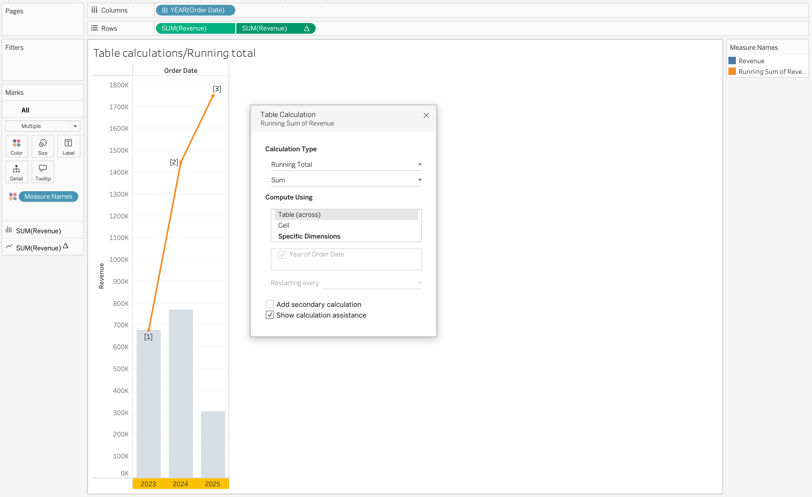
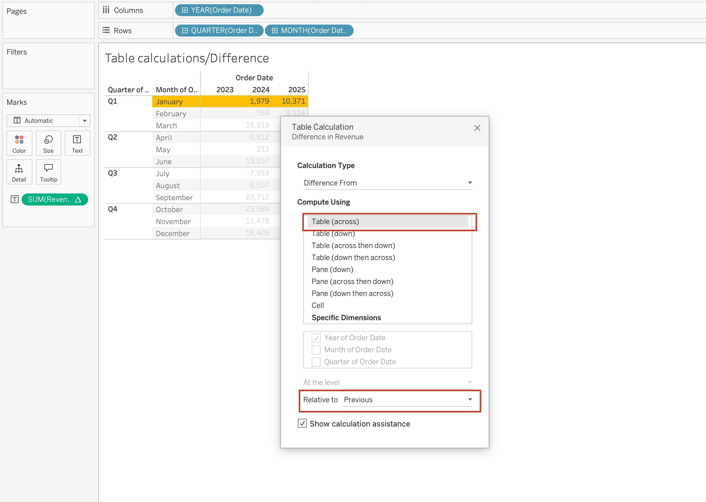
Common Table Calculations
Table calculations are widely used in analytical dashboards to understand trends, comparisons, and rankings.
Running Total
Running totals accumulate values across a defined direction.
RUNNING_SUM(SUM([Order Total]))This is commonly used to track cumulative metrics such as revenue growth over time.
Percent of Total
Percent of total calculates each value’s contribution relative to the total.
SUM([Order Total]) / TOTAL(SUM([Order Total]))This is useful for understanding share distribution across categories or regions.
Rank
Ranking assigns a position to values based on a selected measure.
RANK(SUM([Order Total]))This is often used for identifying top or bottom performers.
Specific Dimensions vs Compute Using
When using Compute Using options, Tableau automatically assigns some dimensions as:
- Partitioning fields
- Addressing fields
However, when selecting Specific Dimensions, you must manually decide:
- Which dimensions define the partition (scope)
- Which dimensions define the addressing (direction)
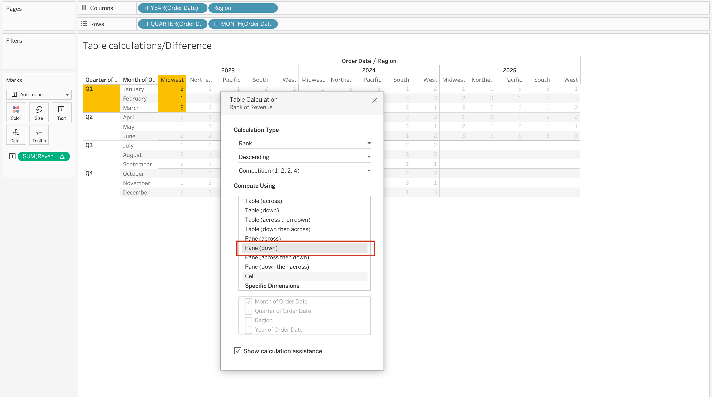
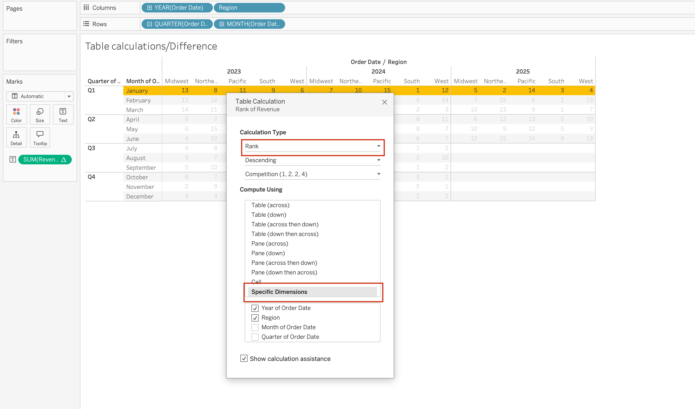
In the Specific Dimensions section of the Table Calculation dialog:
- The order of fields determines the direction of movement through the marks:
Pane (Down)
- Checked dimensions define how Tableau computes the table calculation across the view:
Year of Order Date,Region
Tip
A helpful mental model:
- Partitioning = Where does the calculation reset?
- Addressing = In what order does it move?
Understanding this distinction is essential for correctly configuring running totals, rankings, percent differences, and other table calculations.
More Examples of Table Calculations
Using Table Calculations on Marks card fields
When you place a table calculation on the Marks card Color, the table will be colored based on the measure on the view SUM(Revenue), while the table calculation on Color SUM(Total Quantity) will determine how those values are visually encoded.
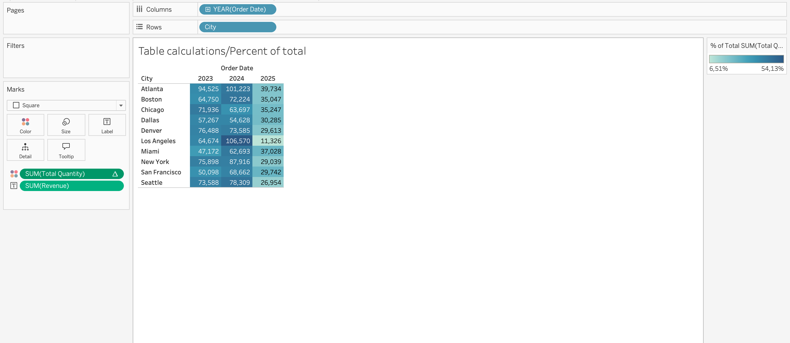
Year-over-year growth is another common use case. If you place SUM(Revenue) on the view and apply a table calculation for year-over-year growth, Tableau will compute the change in revenue across periods based on the addressing direction.
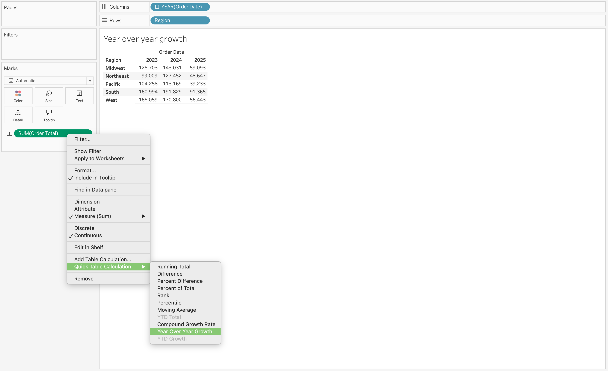
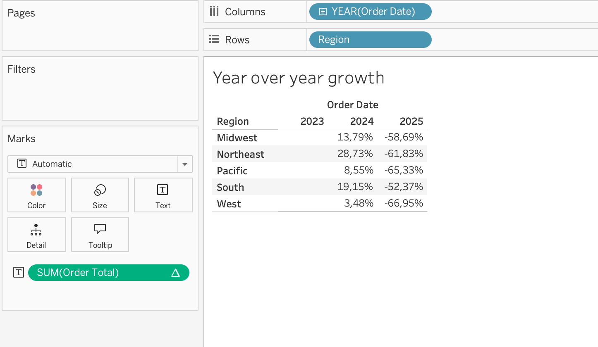
Using Table Calculations on Rows or Columns fields
When you place a table calculation on the Rows or Columns shelf, Tableau modifies the structure of the visualization.
For example, adding a moving average to SUM(Revenue) introduces a smoothed trend line that helps identify patterns over time.
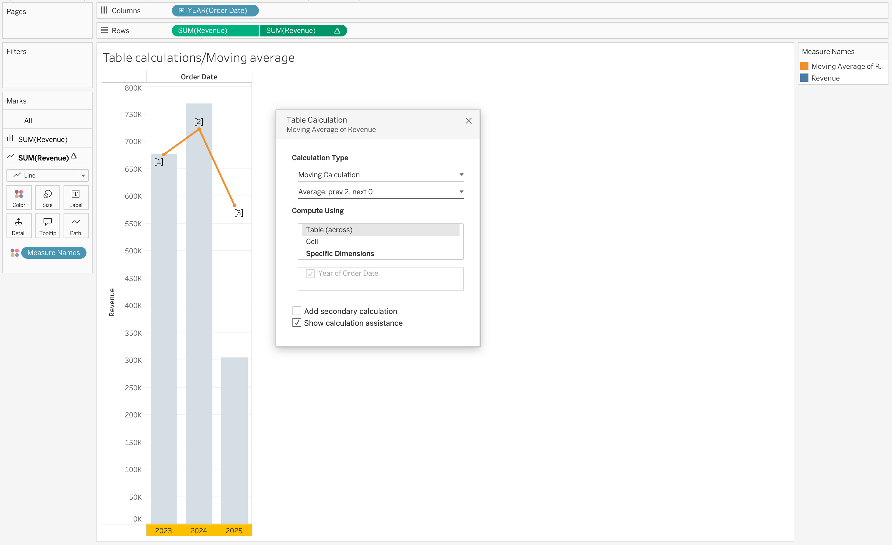
Using Table Calculations on Filters
When you place a table calculation on the Filters shelf, Tableau filters the results after aggregation.
For example, applying a ranking calculation allows you to filter the view to show only the Top N values based on a measure such as Revenue.
This is commonly used in scenarios where users want to focus on the highest-performing categories, customers, or regions.
Date Functions
Dates are a common element in most data sources.
If a field contains recognizable dates, Tableau automatically assigns it a Date or Date & Time data type and enables special functionality.
When date fields are used in visualizations, Tableau provides:
- Automatic date hierarchy (Year → Quarter → Month → Day)
- Date-specific filtering options
- Continuous and discrete date options
- Specialized date formatting
Date functions are used to manipulate date values, not just change how they are displayed.
If you only want to change appearance (for example, show 01/09/24 instead of September 01, 2024), use formatting — not a calculation.
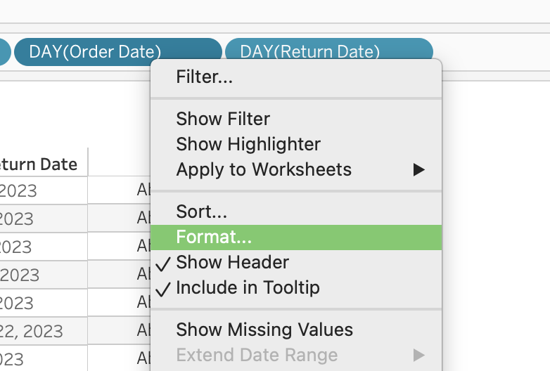
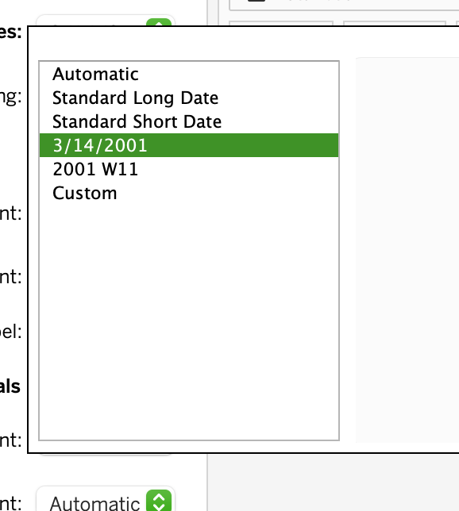
Date Parts
Many date functions use a date_part argument.
Common date parts include:
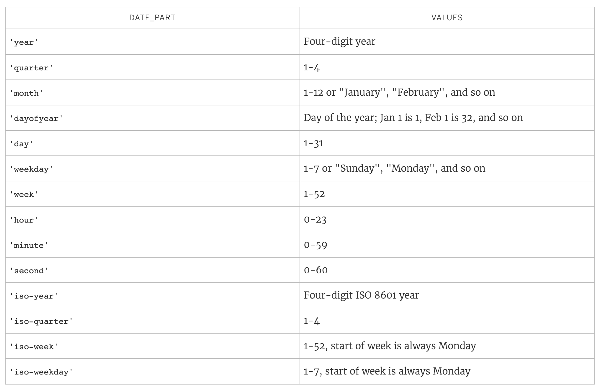
Core Date Functions
DATE
Date converts a string to a date. It can also be used to truncate a datetime to a date.
DATE(string) DATEADD
DateAdd adds a specified time interval to a date.
DATEADD(date_part, interval, date)Example: Calculate Expected Delivery Date
Objective: Add 5 days to Order Date to estimate delivery.
DATEADD('day', 5, [Order Date])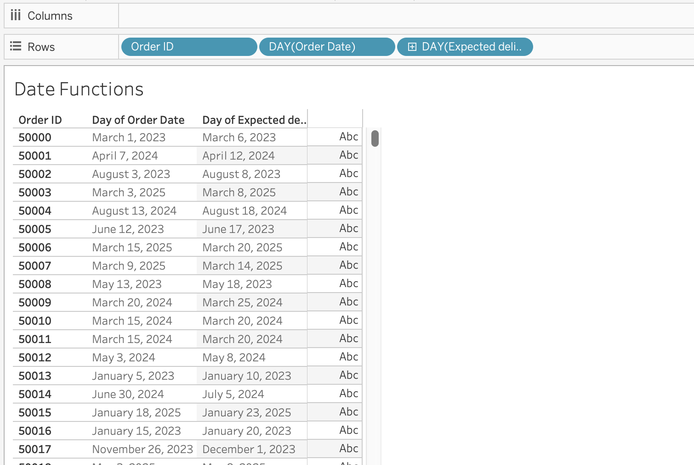
Example: Rolling 12-Months Window
Objective: Filter records from the last 12 months dynamically.
[Order Date] >= DATEADD('month', -12, TODAY())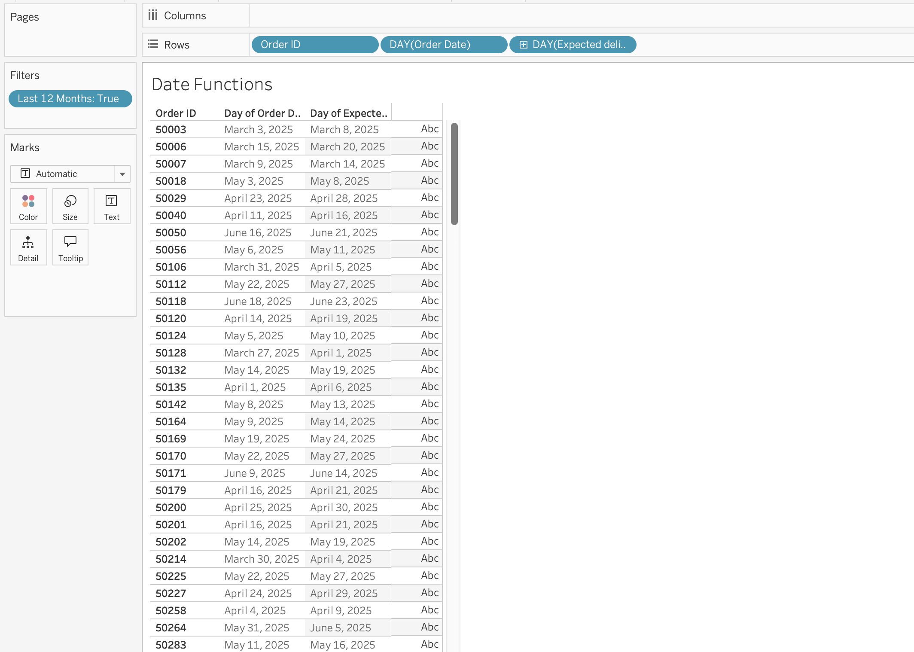
DATEDIFF
Datediff calculates the difference between two dates in specified date parts.
DATEDIFF(date_part, start_date, end_date, [start_of_week])Optional parameter:
[start_of_week] defines week beginning (Sunday, Monday, etc.)
Example: Time to First Order
Objective: Measure when customers place their first order after signing up.
First order date per customer:
{ FIXED [Customer ID] : MIN([Order Date]) }Months between signup and first order:
DATEDIFF('month', [Signup Date], [First Order Date])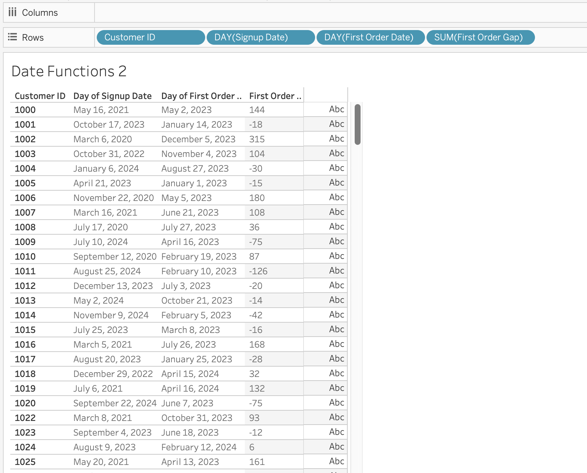
DATENAME
DateName returns the name of a date part as a string. For example, if you want to extract the month from a date, DATENAME will return the name of the month (e.g., “January”, “February”, etc.).
DATENAME(date_part, date)DATEPART
Datepart returns the integer value of a date part. For example, if you want to extract the month from a date, DATEPART will return a number between 1 and 12, while DATENAME would return the name of the month (e.g., “January”, “February”, etc.).
DATEPART(date_part, date)
Note
DATEPART is typically faster than DATENAME.
Example: Extract Year for Grouping
Objective: Build yearly trend charts, create custom year filters
DATEPART('year', [Order Date])When used in the view, make the calculated field discrete dimension to group by year.
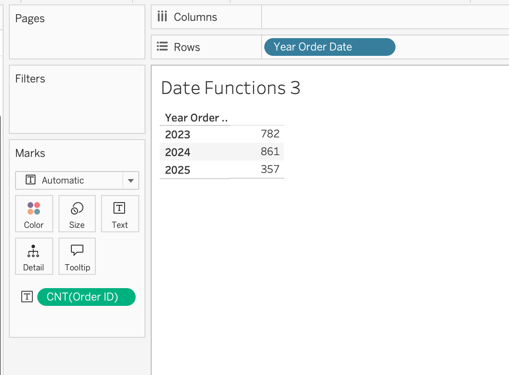
DATEPARSE
Converts a specifically formatted string into a date.
DATEPARSE(format, string)Use case: When DATE cannot recognize custom format
DATETRUNC
Truncates a date to a specified level.
DATETRUNC(date_part, date, [start_of_week])
Important
DATETRUNC changes the actual value, not just the display.
Example: Order Date = 28-12-2023 15:45:30
DATETRUNC('month', [Order Date])
→ 01-12-2023 00:00:00
DATETRUNC('year', [Order Date]) → 01-01-2023 00:00:00
Notice that:
- The date is not just displayed differently
- The underlying value is changed
If you only want to hide the time portion (for example, remove hours/minutes visually), you should format the field instead of using DATETRUNC.
Formatting affects appearance.
DATETRUNC affects the data itself.
What Is [start_of_week]?
This optional parameter defines which day is considered the first day of the week. The further calculations will be based on this definition of a week.
Example: Calculate week based on ISO standard (week starts on Monday) and week starting on Sunday.
DATETRUNC('week', [Order Date], 'sunday')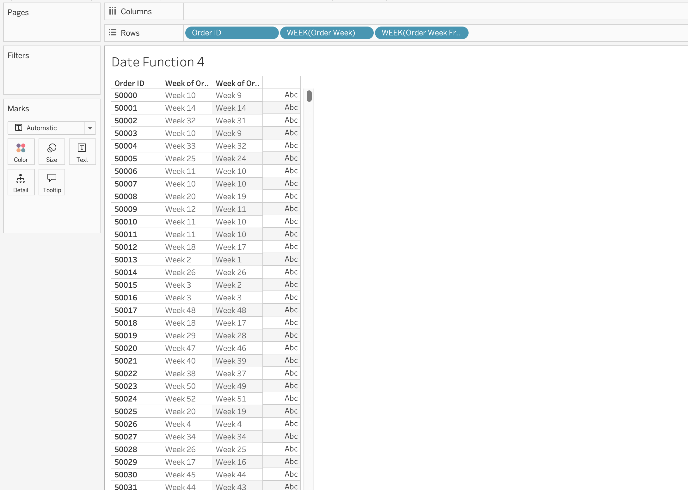
The first calculated field [Order Week] will calculated week based on ISO standard, which will group orders by week starting on Monday, while the second one [Order Week From Sunday] will group orders by week starting on Sunday.
DAY / MONTH / QUARTER / YEAR / WEEK
These functions extract specific parts of a date as integers.
DAY(Order Date) 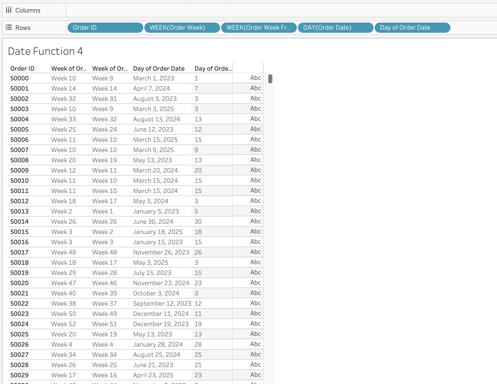
TODAY
Returns the current system date (without time).
TODAY()NOW
Returns the current system date and time.
NOW()MAKEDATE
Constructs a date from numeric year, month, and day.
MAKEDATE(year, month, day)Example: Create Date for 01.01.2026 as [Reporting Date]
MAKEDATE(2026, 1, 1)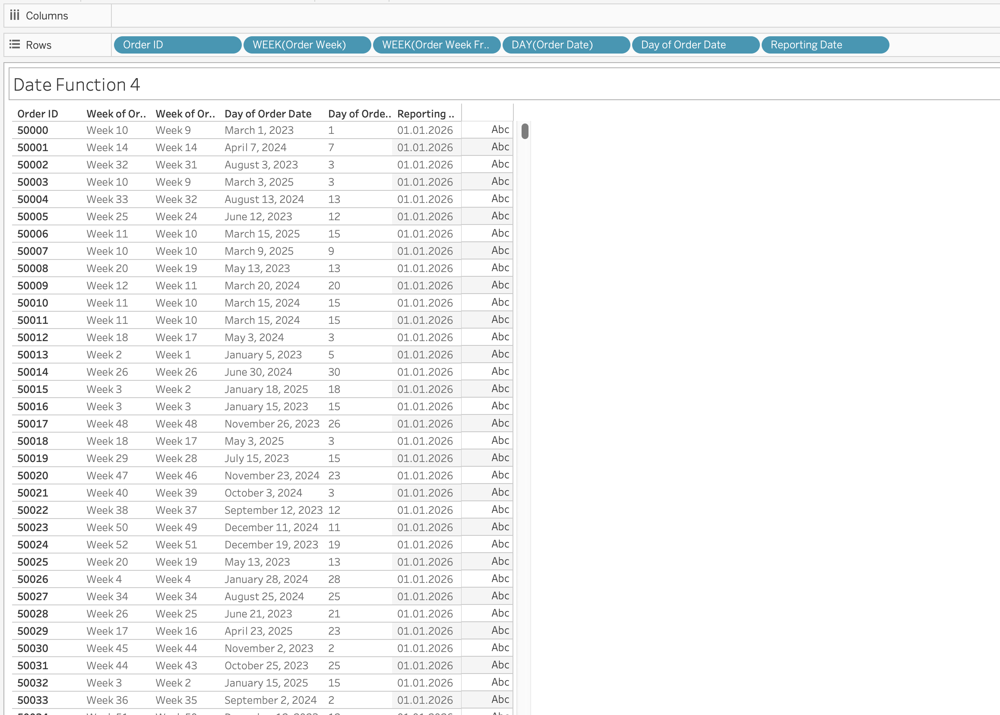
MAKEDATETIME
Combines date and time into datetime.
MAKEDATETIME(date, time)MAKETIME
Constructs time using hour, minute, second.
MAKETIME(hour, minute, second)
Note
Output is datetime (Tableau does not support standalone time type).
ISDATE
Checks whether a string is a valid date.
ISDATE(string)Use case is data validation and cleaning messy datasets.
MAX and MIN (with Dates)
Most recent date:
MAX(date)Earliest date:
MIN(date) The Date Literal (#)
Date values enclosed in # symbols are interpreted as date literals.
Example: #3/25/2025#
This is a special syntax that allows you to directly input date values in calculations without using functions like DATE().
When you use #3/25/2025#, Tableau recognizes it as a date literal and treats it as a date value in calculations.
Without #, Tableau may interpret the value as:
- String
- Number
- Invalid format
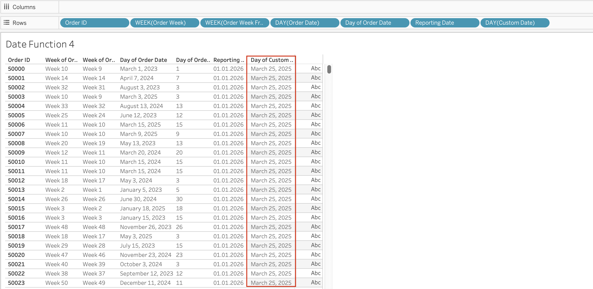
Date Parameters
Date parameters are user-defined controls that allow viewers to dynamically select dates and influence calculations, filters, and visual behavior within a Tableau workbook.
Unlike quick filters, which are directly tied to a specific field in a specific data source, parameters are independent objects. This independence makes them extremely powerful in advanced analytical scenarios, especially when working with multiple data sources, custom logic, or dynamic aggregations.
Conceptual Understanding
A parameter in Tableau is a single value that can be referenced inside one or more calculated fields. When that parameter is of data type Date (or Date & Time), it becomes a flexible time control that can drive time-based logic across worksheets.
Date parameters do not filter data automatically. Instead, they act as inputs to calculations. This means you must explicitly reference them inside a calculated field to control behavior.
For example:
- They can define the start and end of a reporting period.
- They can determine which dates should be included in a KPI.
- They can dynamically adjust the level of time aggregation on an axis.
- They can drive rolling windows or forecast periods.
Because parameters are global to the workbook, one Date parameter can influence multiple worksheets simultaneously.
How Date Parameters Differ from Filters
A standard date filter:
- Is tied to a single data source.
- Automatically filters the data.
- Cannot easily control multiple data sources.
A Date parameter:
- Is independent of any single data source.
- Must be referenced in a calculation.
- Can control multiple data sources.
- Can drive complex logic beyond simple filtering.
This distinction is important. Filters limit data directly. Parameters influence calculations that then determine what to display.
Custom N Date Part Selection
This type of date parameter is flexible because it allows users to simultaneously choose:
- The date part (day, week, month, quarter, year)
- The date range (N periods)
Instead of creating separate filters for:
- Last 30 Days
- Last 3 Months
- Last 1 Year
the user can dynamically control both:
- The unit of time
- The number of periods
Step 1
Create a parameter named: Date Part
Configuration:
- Data Type → String
- Allowable Values → List
- Add values:
- Day
- Month
- Year
Right-click the parameter → Select Show Parameter
This parameter controls the time unit.
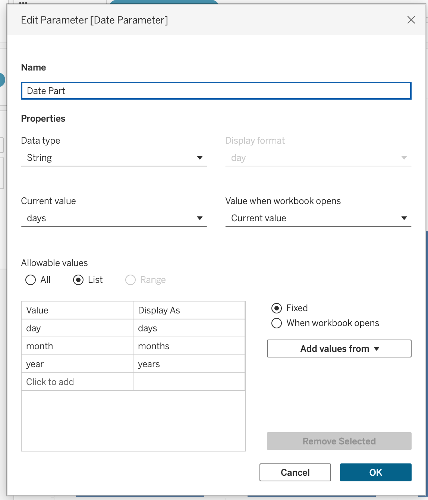
Step 2
Create another parameter named: N Values
Configuration:
- Data Type → Integer
- Allowable Values → Range
- Minimum → 1
- Maximum → 30
- Step Size → 1
Right-click → Select Show Parameter
This parameter controls how many periods to include.
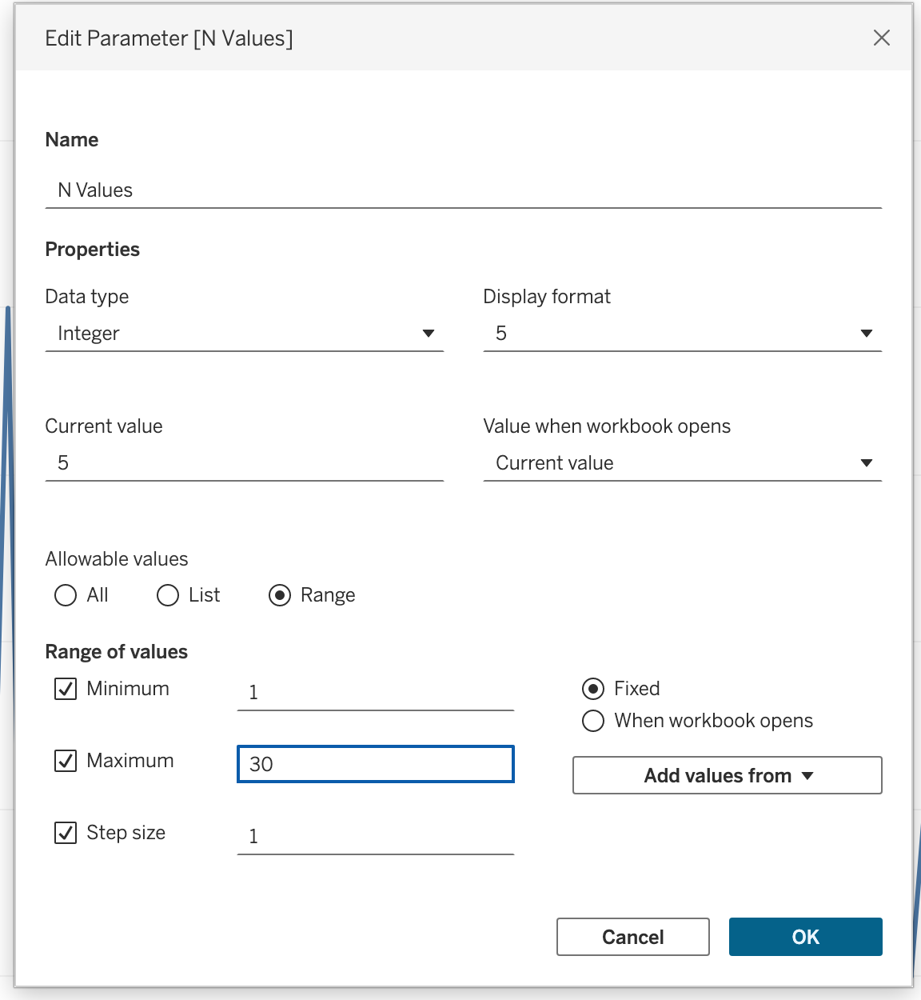
Step 3
Create an Anchor Date (Recommended)
We will anchor the calculation to the latest available Order Date in the dataset.
Create a calculated field: Latest Order Date
{ FIXED : MAX([Order Date]) }We are doing this way beacause
TODAY()→ depends on the system date
NOW()→ depends on server timezone
{ FIXED : MAX([Order Date]) }→ finds the most recent order in the dataset, removes any dimension filtering from the view
Step 4
Create a calculated field named: p. Date Part
Note
REMEMBER: The p. prefix is a naming convention used throughout this course to indicate that a calculated field is parameter-driven , as its value depends on a parameter rather than raw data. This makes it easy to identify parameter-linked fields in the Data pane at a glance.
IF [Date Part] = 'day' then ([Order Date]) > DATEADD('day', -[N Values], [Latest Order Date])
ELSEIF [Date Part] = 'month' THEN ([Order Date]) > DATEADD('month', -[N Values], [Latest Order Date])
ELSE ([Order Date]) > DATEADD('year', -[N Values], [Latest Order Date])
ENDStep 5
- Drag p. Date Part to filters shelf
- Select True
Step 6
- Drag to the column shelf a dimension: Region
- Drag
COUNT([Order ID])to the Rows shelf
Step 7
Change the parameter values to observe the changes in dimension aggregation.
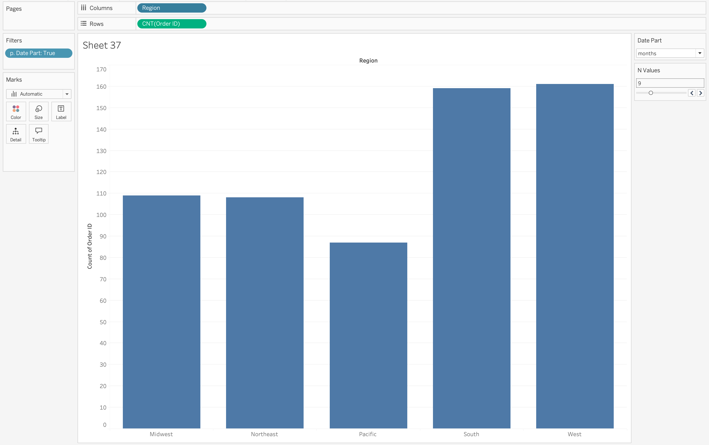
Dynamic KPI Calculations
Date parameters can define a reporting window inside calculations.
For example, instead of filtering out data outside the selected range, you can write a calculation that returns Sales only if the Order Date falls between the selected parameters.
This allows you to:
- Compare full dataset vs selected period.
- Build dynamic period-to-period comparisons.
- Create flexible dashboard controls.
This will be further explored in the KPI section.
Dynamic Time Aggregation
One advanced use of Date Parameters is dynamically controlling the level of date aggregation.
For example, the date axis can automatically aggregate by:
- Day
- Week
- Month
- Quarter
- Year
depending on the selected parameter value.
This is achieved using DATETRUNC, which adjusts the aggregation level dynamically.
By using this approach, the visualization adapts automatically to the selected time granularity, improving readability and analytical clarity.
Step 1
Create a parameter named Date Granularity.
Parameter configuration:
- Data Type → String
- Allowable values → List
- Values → day, week, month, quarter, year
Right-click the parameter and select Show Parameter.
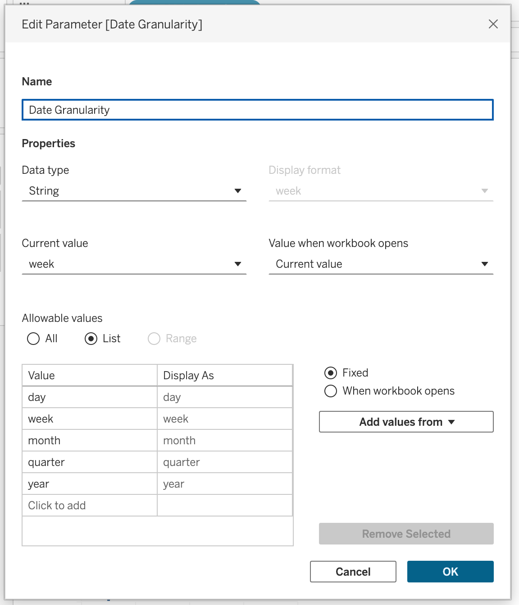
Step 2
Create a calculated field named p. Date Granularity with the following calculation:
DATE(
CASE [Date Granularity]
WHEN 'day' THEN [Order Date]
WHEN 'week' THEN DATETRUNC('week', [Order Date])
WHEN 'month' THEN DATETRUNC('month', [Order Date])
WHEN 'quarter' THEN DATETRUNC('quarter', [Order Date])
ELSE DATETRUNC('year', [Order Date])
END
)Step 3
- Drag p. Date Granularity to the Columns shelf
- Right-click the pill
- Select Exact Date
- Change it to Discrete
- Drag
COUNT([Order ID])to the Rows shelf
Selecting Exact Date ensures Tableau uses the full date value returned by the calculation.
Without this, Tableau may automatically aggregate the date into a higher-level hierarchy (for example, Year or Month), which would override the dynamic logic we created.
Changing the field to Discrete creates distinct headers for each date value instead of a continuous timeline.
This is important because:
- Each truncated date (day/week/month/quarter/year) should appear as a separate category.
- It prevents Tableau from interpolating values across a continuous axis.
- It ensures the view respects the exact granularity selected in the parameter.
Step 4
Change the parameter value to observe how the granularity changes dynamically.
When you switch between:
- day
- week
- month
- quarter
- year
the axis updates automatically to reflect the selected time level.
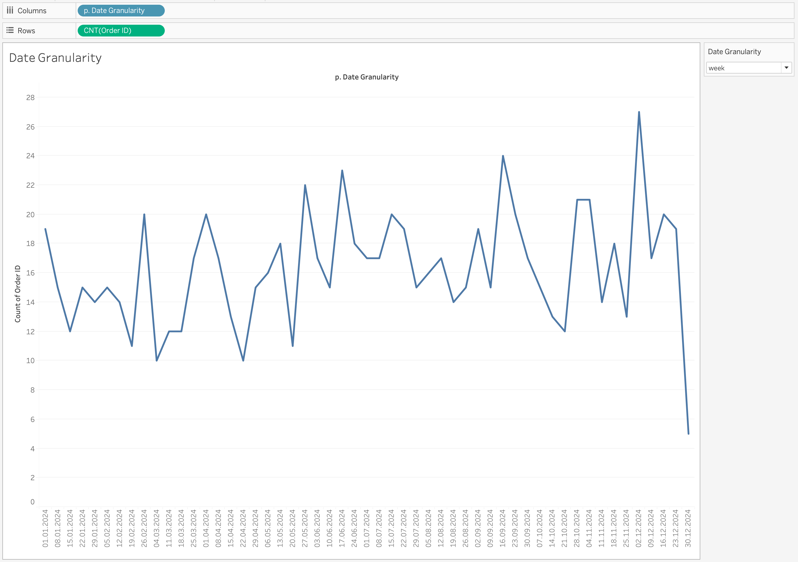
Multi-Source Dashboards
When working with multiple data sources, each source typically has its own date field.
If you use quick filters, you would need:
- One date filter per data source
This leads to duplicated controls on the dashboard and a less clean user experience.
Using Date parameters instead allows you to create:
- A single Date Part parameter
- A single Start Date parameter
- A single End Date parameter
Each data source then contains its own calculated filter that references the same parameters.
As a result:
- All worksheets respond to the same date controls
- The dashboard remains clean and professional
- The user interacts with one unified time control
This creates a seamless and consistent experience across multi-source dashboards.
Cohort Analysis in Tableau
Cohort Analysis is a technique used to analyze the behavior of groups of users that share a common characteristic over time.
Instead of analyzing all users together, cohort analysis groups users based on a shared starting event, allowing to observe how behavior changes across time for each group.
Common cohort grouping criteria include:
- First purchase date
- First login date
- First subscription date
- First product activation
This method is widely used in:
- Customer retention analysis
- Product usage analysis
- Marketing performance evaluation
- Telecom subscriber lifecycle analysis
For example:
- Customers who made their first purchase in January
- Customers who made their first purchase in February
Each of these groups becomes a cohort.
Cohort Analysis Concept
A cohort analysis typically consists of three components:
- Period
- Start Date
- Metric Being Measured
Example:
| Start Date | Period 0 | Period 1 | Period 2 | Period 3 |
|---|---|---|---|---|
| Jan 2024 | 100% | 70% | 55% | 40% |
| Feb 2024 | 100% | 75% | 60% | 45% |
| Mar 2024 | 100% | 72% | 58% | 44% |
Interpretation:
- Month 0 → when users first appeared
- Month 1 → one month after acquisition
- Month 2 → two months after acquisition
This structure allows us to analyze retention or activity decay over time.
Cohort Analysis Workflow in Tableau
Steps include:
- Identify the first activity date for each user
- Assign each user to a cohort group
- Calculate time elapsed since the cohort start
- Aggregate metrics by cohort and time period
Cohort Analysis Example
Let’s explore Cohort Analysis in Tableau using the Online Retail Dataset
Cohort analysis becomes very practical with the Online Retail dataset because the table contains transactional data at the invoice line level.
From the dataset, we can see the following important fields:
- Customer ID identifies the customer
- Invoice Date identifies when the transaction happened
- Quantity and Unit Price can be used to calculate sales
- Multiple rows can belong to the same invoice because one invoice may contain several products
In cohort analysis, we usually group customers based on the date of their first purchase and then track their later activity.
In this dataset:
- Each row is a product line within an invoice
- One customer can have many invoices
- One invoice can contain many products
- Customers purchase at different times
This allows us to answer questions such as:
- In which month did the customer make the first purchase?
- Did the customer return in later months?
- Which cohort has better retention?
- Which cohort generates more revenue over time?
Cohort Definition
For this dataset, the cohort is defined as:
Customers grouped by the month of their first invoice date
\[\downarrow\]
- Customers whose first order was in January 2011 belong to the January 2011 cohort
- Customers whose first order was in February 2011 belong to the February 2011 cohort
Cohort Analysis Logic
Step 1: Find the First Purchase Date per Customer
{ FIXED [Customer ID] : MIN([Order Date]) }Name: First Purchase Date
This calculation:
- Identifies the earliest purchase per customer
- Returns the same value for all rows of that customer
Step 2: Create the Cohort Month
DATETRUNC('month', [First Purchase Date])Name: Cohort Month
Step 3: Create Invoice Month
DATETRUNC('month', [Order Date])Name: Invoice Month
Step 4: Calculate Period
DATEDIFF('month', [Cohort Month], [Invoice Month])Name: Period
Step 5: Calculate Active Customers
COUNTD([Customer ID])Name: Active Customers
Step 6: Build the Heatmap
- Drag
MONTH([Cohort Month])→ Rows
- Drag
[Period]→ Columns
- Set both as Discrete Dimensions
- Set Marks type → Square
- Drag
COUNTD([Customer ID])→ Color
- Drag
COUNTD([Customer ID])→ Label
Retention Rate Calculation (Important)
Retention rate is calculated using a table calculation.
- Duplicate
COUNTD([Customer ID])on Label
- Apply Quick Table Calculation → Percent From
- Compute Using → Table (Across)
- Relative to → First
This means:
- Each value is divided by the value in Period 0
- Period 0 becomes 100% baseline
- All other periods show retention relative to cohort size
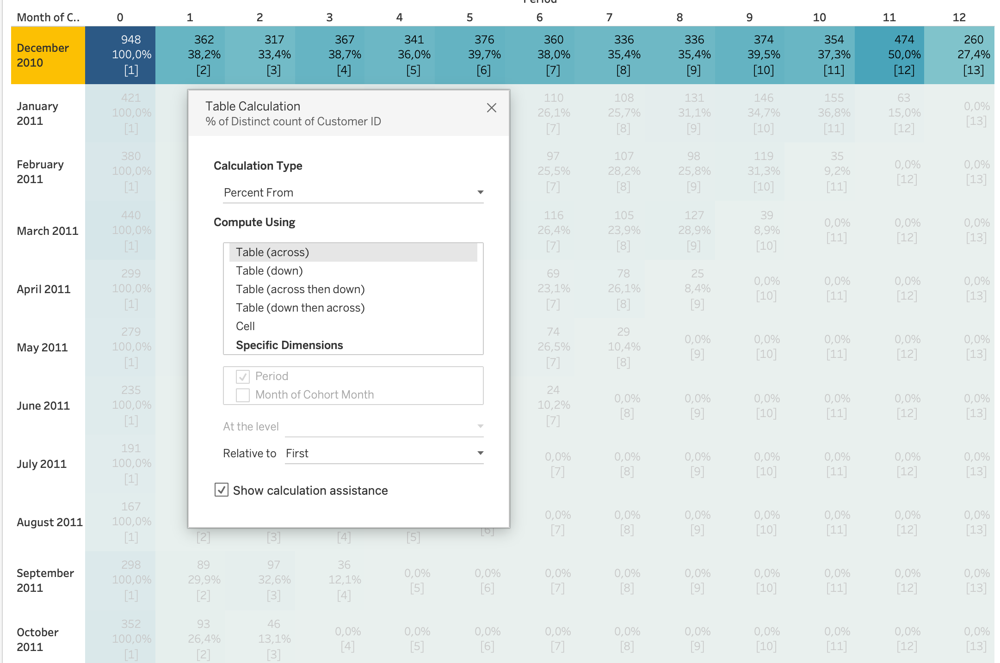
Important
Retention Rate is a table calculation, not a basic aggregation.
It depends on the view layout and uses Percent From First logic.
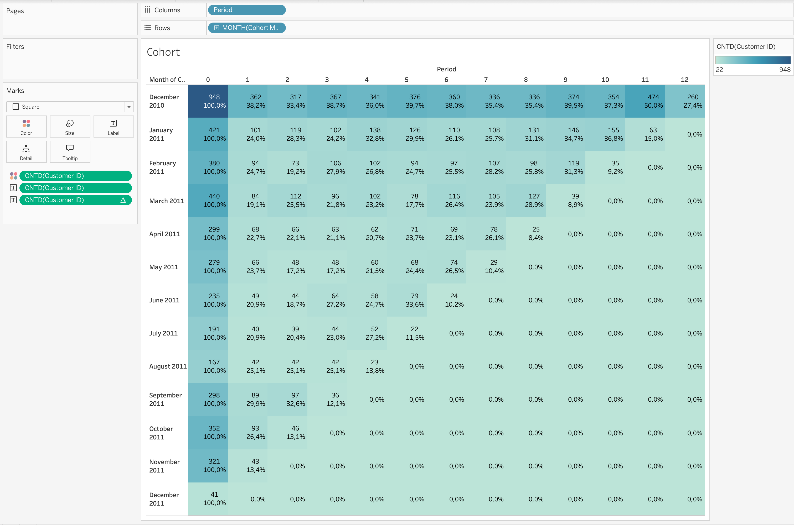
Step 7: Clean the View
- Create field
[Retention Rate]from table calculation
- Drag to Filters
- Filter values >= 0.01%
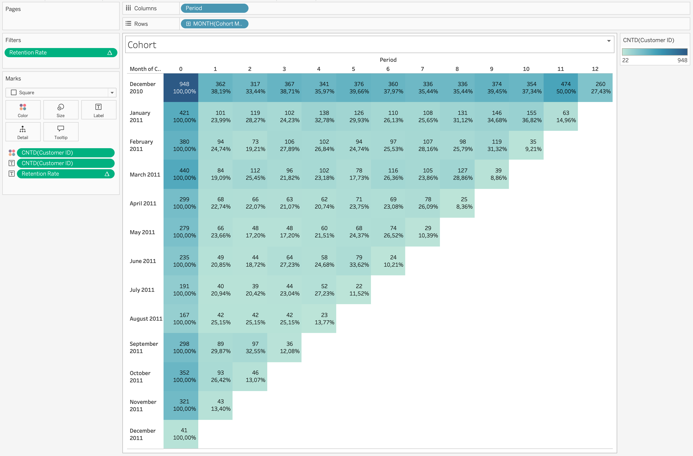
Example Interpretation
If a cohort shows:
- Month 0 = 100%
- Month 1 = 38%
- Month 2 = 33%
This means:
- All users were active in first month
- 38% returned next month
- 33% remained active after two months
Cohort by Country
Let’s try to add Country to Filters and answer the following questions:
- Which countries retain better?
- Which markets are stronger?
Product-Based Cohort
Group customers by first product category and answer the following questions:
Questions:
- Which products drive retention?
- Which products lead to repeat purchases?
Revenue Cohort
Analyze revenue instead of user count and answer the following questions:
- Which cohort generates highest revenue?
- Do newer cohorts spend more?
Cleaning and Reshaping Data in Tableau
Before building visualizations or dashboards, data must often be cleaned and reshaped.
Real-world datasets rarely arrive in a perfectly structured format suitable for analysis.
Common issues include:
- Missing values
- Incorrect data types
- Duplicated records
- Inconsistent formatting
- Wide tables that need to be normalized
- Columns containing multiple values
Cleaning ensures data accuracy, while reshaping ensures data structure fits analytical needs.
flowchart LR A[Raw Data] --> B[Data Cleaning] B --> C[Data Reshaping/optional/] C --> D[Structured Analytical Dataset] D --> E[Visualization & Analysis]
Data Cleaning in Tableau
Data cleaning focuses on improving data quality before performing analysis.
Tableau allows several cleaning operations directly inside the Data Source page or through Calculated Fields.
Handling Missing Values
Missing values are one of the most common problems in datasets.
NULL values may represent missing records, unavailable information, or incomplete data collection.
Common approaches to handle NULL values include:
- Replace NULL values with a default value:
IFNULL([Revenue],0)ZN([Revenue])
- Filter out rows containing NULL values
- Use calculated fields to define fallback values
Correcting Data Types
Each field in Tableau has a data type such as:
- String
- Number
- Date
- Boolean
- Geographic
Incorrect data types can lead to incorrect aggregations or calculation errors.
Common corrections include:
- Converting strings to numeric values
- Converting strings to date values
- Changing dimensions to measures
Example converting a field to a date:
DATE([Order Date])Example converting a string to a number:
INT([Customer Age])Ensuring the correct data type improves calculation accuracy and visualization behavior.
Removing Duplicate Records
Duplicate rows can distort metrics such as totals, averages, or counts.
Instead of counting all records, analysts often count distinct entities.
Example:
COUNTD([Customer ID])This ensures that each customer is counted only once.
Splitting Columns
Some datasets contain multiple pieces of information within a single column.
For proper analysis, it is often necessary to separate these values into multiple fields.
In the Online Retail dataset, the Description column contains long product names that may include multiple descriptive elements.
Example:
| Description |
|---|
| SET/4 BADGES CUTE CREATURES |
| SET/4 SKULL BADGES |
| FANCY FONT BIRTHDAY CARD |
Sometimes product descriptions may contain structured information such as category and product name within a single field.
Steps:
- Right-click the column
- Select Split or Custom Split
- Choose the delimiter (for example
/or a space)
After splitting, Tableau automatically creates new columns.
Example result:
| Product Type | Product Name |
|---|---|
| SET | 4 BADGES CUTE CREATURES |
| SET | 4 SKULL BADGES |
| FANCY | FONT BIRTHDAY CARD |
Splitting fields improves:
- filtering
- grouping
- hierarchical analysis
- product categorization
Creating Hierarchies
Hierarchies organize fields into structured levels that support drill-down analysis.
Hierarchies allow:
- Drill-down exploration
- Structured navigation in dashboards
- Aggregated views across levels
- Simplified analysis of large datasets
The Online Retail dataset naturally supports a hierarchy such as:
graph TD A[Country] --> B[Customer ID] B --> C[Invoice No]
Example structure:
| Country | Customer ID | Invoice No |
|---|---|---|
| United Kingdom | 17850 | 541696 |
| France | 12583 | 541697 |
This hierarchy allows users to:
- Analyze sales by Country
- Drill down into Customers
- Explore specific Invoices
Steps:
- Drag one dimension onto another in the Data Pane
- Tableau creates a hierarchy automatically
- Rename the hierarchy if needed
- Use the hierarchy in visualizations for drill-down analysis
Wide to Long Format (Pivoting)
Pivoting is a data reshaping technique used to convert columns into rows.
This transformation is particularly useful when datasets store similar measures in multiple columns instead of a single column.
Many analytical workflows and visualization tools work better with long (tidy) data structures, where:
- one column represents the type of measure
- another column represents the value of the measure
flowchart LR A[Gold Column] B[Silver Column] C[Bronze Column] A --> D[Pivot Operation] B --> D C --> D D --> E[Medal Type] D --> F[Medal Count]
Example Dataset: Olympic Medals
For this example we use a dataset containing Olympic medal counts by country and year.
The dataset contains the following columns:
CountryYearSeasonGoldSilverBronzeTotal Medals
Structure before pivoting:
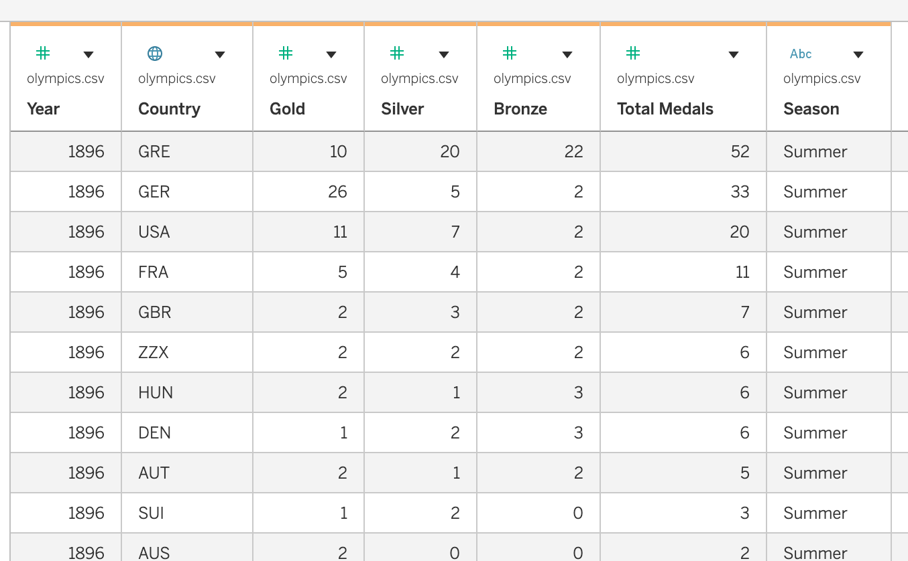
In this structure:
- each medal type is stored in a separate column
- this is called a wide format dataset
However, comparing medal types dynamically in Tableau becomes easier when the dataset is reshaped.
Resources
Github Repo
Tableau Course Code Repository for this session is available in the GitHub repository linked above. It includes:
- Tableau workbook with all examples
- Sample datasets